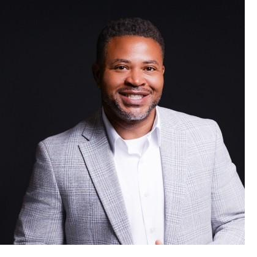

About
A firm built around long-term ownership.
Greenday Venture works with owners of established home-service businesses who are thinking carefully about what comes next for the company they built.
Why Greenday Venture exists
Many owners of well-run trade businesses reach a point where the question is no longer how to grow, but who should carry the work forward. The options presented to them are often built around speed and price. Fewer are built around what happens after the closing.
Greenday Venture was founded to provide established business owners with a thoughtful path toward long-term ownership transition. The intent is straightforward: buy good companies, keep them running well, and treat the people inside them as the reason the business is worth buying at all.
How we think about ownership
A change in ownership is a change for everyone who depends on the company. Technicians want to know whether the schedule and the pay stay steady. Customers want to know whether the same crew shows up. Family members want to know what the name still means.
Greenday Venture is focused on long-term ownership rather than preparing a business for a quick resale. Improvements, when they come, are meant to make the work easier to sustain, not to strip the company down.
A business owner is not merely selling an asset. The owner may be deciding what happens to decades of work, employees, customers, family history, and reputation.
Respect for what already works
An established company carries knowledge that does not appear on a balance sheet: how jobs get scheduled, which customers to call personally, which technician to send on the difficult call. Understanding that comes first. Changing it, if ever, comes much later.
Founder
Who you are talking to.

Jermane Lamb
Founder, Greenday Venture
Greenday Venture is a small, owner-led firm. Initial conversations are handled personally by Jermane rather than routed through a deal desk or a chain of intermediaries.
That is intentional. Owners considering a transition deserve a direct counterpart who can answer questions plainly and approach the discussion discreetly.